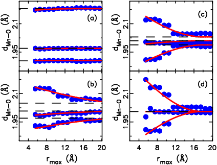

|
| Figure 1: Crystal structure of LaMnO3. Mn atom is in the center of the octahedron of Oxygen atoms. |
|
| Figure 1: Crystal structure of LaMnO3. Mn atom is in the center of the octahedron of Oxygen atoms. |
 |
| Figure 2: Shown are the lengths of Mn-O
bonds within an octahedron. Average structure results with conventional crystallography are shown as dashed lines. The open circles show the PDF results for structures at different length scales. The length scale of local to average structure transition is about 1.6 nm. |